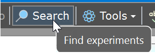
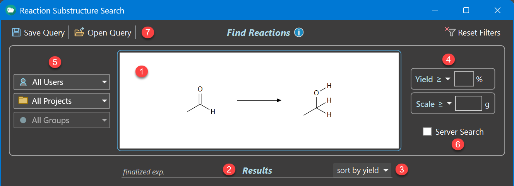
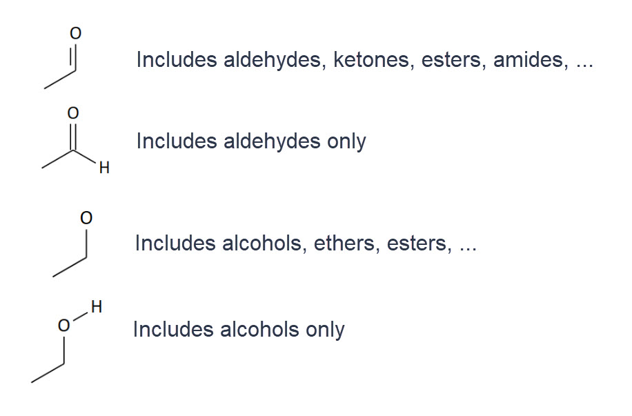
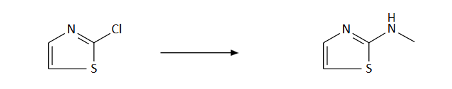
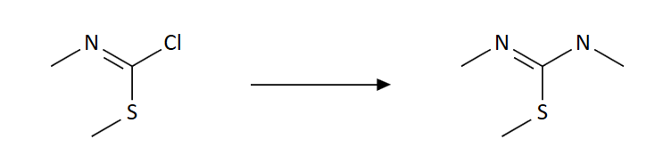
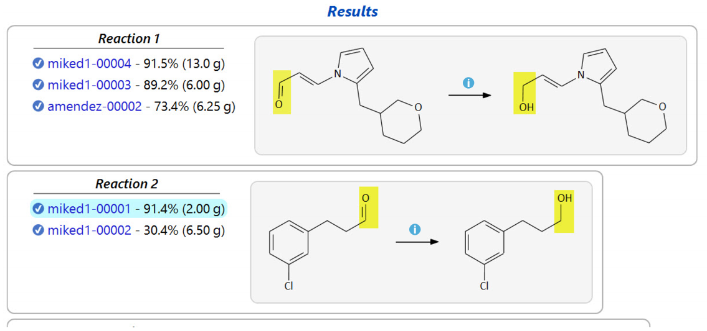
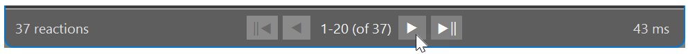

Reaction Search

Reaction Substructure Searches
A reaction substructure search lets you find experiments involving a specific reaction, say the reduction of an aldehyde to a primary alcohol, as an example. The search is initiated by drawing a reaction sketch containing only of the smallest possible fragments of reactant and product which actually do change during the reaction. To increase the selectivity of the query, relevant substituents surrounding the reactive centers may additionally be specified, if required.
The Substructure Search Dialog
This dialog is accessible from the main toolbar:
Search → Substructure Search ...
Suppose we want to find all experiments in which an aldehyde is reduced to an alcohol. To begin, click the Search button in the main toolbar, which opens the Substructure Search dialog:

Reaction Substructure Sketch ❶
Click anywhere inside the reaction sketch area to edit the desired substructure sketch in the appearing drawing editor. In above example, the reduction of an aldehyde to a primary alcohol already was entered. Note the explicit hydrogen bonds present in the product, which exclude e.g. the formation of an ether or of a secondary alcohol.
In Phoenix ELN substructure queries, explicit hydrogens are essential for restricting the results to what you actually want. The rule is, that no specified substituent means that any substituent is allowed for a match. The illustration below explains the role of explicit hydrogens in more detail:

Another aspect to keep in mind is aromaticity. If you want your query to match a reaction occurring in an aromatic system, your query sketch also must represent an aromatic system - and vice versa. This means that e.g. reactions involving the aromatic reaction centers below ...

.. will not be found by the query below, since its substructures don't describe an aromatic system.

In this example, you actually need to utilize the first of the two reactions as the query, since only this one contains the minimum elements required to represent the aromatic system.
In addition, following restrictions apply:
- Stereochemistry and cis/trans geometries currently are ignored in queries.
- Only the reference reactant and the reference product are considered in queries.
Search Results ❷
After entering the substructure sketch, the Results panel immediately updates to combine all matching experiments into distinct groups sharing the same reaction, sorted by yield or scale, depending on the selected sort type ❸. Note that only finalized experiments are listed in the search results, since unfinalized ones are considered work in progress.

Click the info link  on top of a reaction arrow to open the Synthetic Connections graph, which reveals all currently available synthetic pathways leading to and away from this step. This context information substantially increases the scope and utility of the search results.
on top of a reaction arrow to open the Synthetic Connections graph, which reveals all currently available synthetic pathways leading to and away from this step. This context information substantially increases the scope and utility of the search results.

The search results are presented in result pages containing at most 20 reactions. The navigation panel at the bottom of the result list lets you navigate through subsequent and previous result pages, if more than 20 hits were found. In this case, the first result page contains the most relevant matches, depending on the specified sort type ❸ (by yield or scale). Subsequent pages contain results with decreasing relevance.
Examining Experiment Hits
Clicking an experiment entry in a result group opens the experiment in your protocol area for examination. You may need to move the search window slightly to the right to see the relevant parts of the protocol in the background. Since the search window is designed to allow interaction with content in its background while it remains open, it is possible to conveniently browse through the contents of result experiments while still being able to interact with their content, e.g. for printing or scrolling through larger ones.
If you want to repeat an experiment created by someone else (server mode), you can clone it when present in your protocol are by using the add experiment link in your experiments tree.
Experiment Filters ❹
The search results can be filtered by yield and/or scale, where scale means the amount of utilized reference reactant. Type the desired values into the corresponding text box and apply it by pressing RETURN. The comparison operators ≤ (smaller or equal) and ≥ (larger or equal) can be chosen from the drop down triangle to the left of the text boxes. Both filters may be used in combination. An empty text box means that no filter is specified.
- Yield: Filter the search results by the specified yield. Only integer values are accepted. Search for ≤ 0 to locate failed experiments only (no yield). To exclude them, search for ≥ 0.
- Scale: Filter the search results by the experiment scale, in grams. As a rule of thumb, the larger the experiment scale, the more reproducible the yield.
Both values are reset after clicking the Reset Filters button located on top of the experiment filters area.
Navigation Filters ❺
- Users: Filter the search results by user. This is useful when Server Search ⑥ is active.
- Projects: Filter the search results by project. If a specific user was selected, only the projects of this user are available for selection. Otherwise all projects present on the current database can be chosen. Projects originating from multiple users but sharing the same project name (case insensitive) are merged into a single entry, allowing to locate experiments of common projects.
- Groups: Filter the search results by project group. Only project groups belonging to a selected project can specified. This filter is inactive if no project is selected.
All selections are reset after clicking the Reset Filters button located on top of the experiment filters area.
Server Search ❻
By default, searches are performed on the experiments database stored locally on your computer. If you enable the Server Search option, the query is instead run against your optional in‑house ELN server database, which contains the experiments of all users of your organization. This greatly expands the scope and usefulness of substructure searches, essentially resulting in an in-house reaction database. This option is only available if connected to an ELN server.
Saving & Opening Queries ❼
The current combination of substructure sketch and applied filters can be saved for later use by clicking the Save Query button in the main toolbar. Saved queries can be reopened using the adjacent Load Query toolbar button. Note that the Server Search and Result Sorting options are not saved in a stored query. They are stored in the local user settings instead.